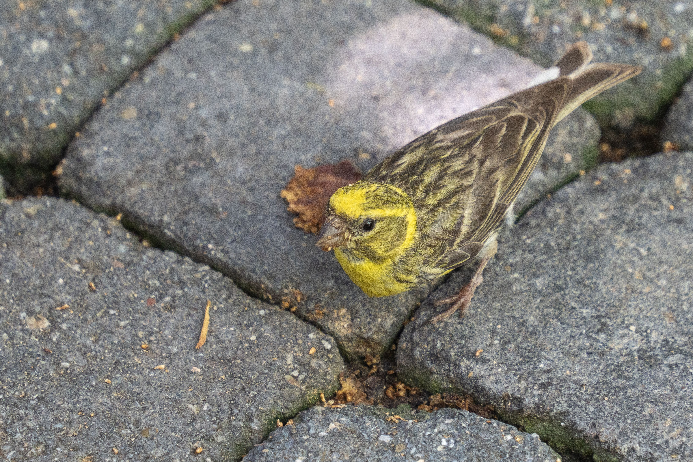

The European Serin is a tiny finch with a short, conical bill and predominantly yellow-green plumage. Males are especially bright on the face, breast and rump, while females and juveniles are duller and more heavily streaked. It is a lively bird that often feeds among grasses, weeds and shrubs and can also be found around orchards, gardens and open woodland. The species is widespread across much of southern and central Europe and has expanded northward in parts of its range. Its rapid, high-pitched song is often delivered from a prominent perch or while the bird is perched in vegetation. It is smaller and more compact than the European Greenfinch, with more heavily streaked plumage and a noticeably shorter bill.